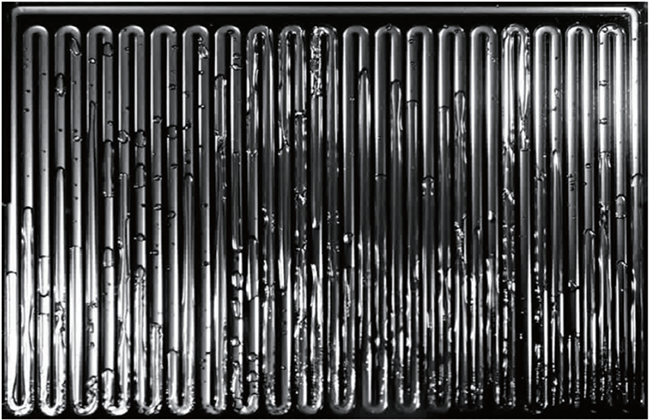

KAIST Top 10
KAIST Top 10
KAIST RESEARCH ACHIEVEMENTS
The development of flexible heat spreader
Department of Mechanical Engineering Sung Jin Kim
Summary
Cooling technology is an integral part for assuring the reliability of electronics. Recently, with the trend toward flexible electronics, such as wearable devices and flexible displays, there is an increasing need for a flexible heat spreader for effective thermal management of flexible electronics. Previous flexible heat spreaders have limitations in their lifetime and thermal performance. In our group, we have developed a flexible heat spreader incorporating novel packaging and design technologies. The lifetime and the thermal performance of the flexible heat spreader have dramatically improved by a few hundred times and two times than previous ones, respectively, using phase change heat transfer by bubble oscillation in the hermetically-sealed channel structure. The flexible heat spreader developed in our group is expected to be used as the next generation cooling technology in various flexible electronics.
Background (objectives)
With the rapid progress of the semiconductor industry, a heat load of electronic devices has significantly increased in recent years. A hot spot induced by a high heat load in electronics not only threatens users’ safety, but also causes a decrease in their performance and lifetime. Therefore, as cooling technology in electronics, a heat spreader is necessary from points of view of reliability and safety. Furthermore, with the recent trend toward flexible electronics, such as wearable devices and flexible displays, there is an increasing need for a flexible heat spreader that can be applied to flexible electronics. However, there exists an inherent problem that their thermal performance deteriorates in less than a month due to high gas permeation through the base. To solve the problem, our group proposed the flexible heat spreader incorporating novel packaging and design technologies.
Contents
For assuring the flexibility, the base of flexible heat spreaders should be comprised of polymer, but polymer has extremely high gas permeability. The permeated non-condensable gases (NCGs) into flexible heat spreaders through the polymer base disturb the evaporation and condensation phenomena, which are the key mechanisms of heat transfer. Thus, gas permeation seriously deteriorates the thermal performance and the lifetime of heat spreaders. In our group, we have developed a flexible heat spreader in which heat is transferred by bubble oscillation in the hermetically-sealed channel structure. A method for reliable metallic packaging was proposed for the first time, in which the silane treated surface of polymer was chemically bonded to the metal. The polymer surface was activated by O2 plasma, and we combined the silane molecules and the activated surface. Due to the metal packaging using the silane coupling agent, the permeation of NCGs into the flexible heat spreader was blocked effectively.
 [Figure 1] The flexible heat spreader
[Figure 1] The flexible heat spreader
 [Figure 2] Flow visualization of the flexible heat spreader
Because this treatment could be carried out at room temperature, there was no deformation of the channel structure that can degrade the thermal performance. The experimental results show that the lifetime of the flexible heat spreader is more than 2000 days, and the thermal performance is 2.6 times higher than that of copper. In addition, it was confirmed that the lifetime and thermal performance of the flexible heat spreader maintained well even in the bent conditions.
Expected effect
Until today, flexible heat spreaders have the limitation in their lifetime due to high gas permeation through the base. In our group, we have developed a flexible heat spreader incorporating novel packaging and design technologies to overcome this limitation. Due to phase change heat transfer by bubble oscillation in the hermetically-sealed channel structure, the flexible heat spreader has a few hundred times longer lifetime and two times higher thermal performance than previous flexible heat spreaders. In the future, the flexible heat spreader developed in our group is expected to be used as the next generation cooling technology in various flexible electronics.
Research Outcomes
[Paper 1] J. Lim and S. J. Kim*, "Fabrication and experimental evaluation of a polymer-based flexible pulsating heat pipe", Energy Conversion and Management 156, 358-364 (2018) [Impact Factor = 7.181].
[Paper 2] C. Jung, J. Lim and S. J. Kim*, "Fabrication and evaluation of a high-performance flexible pulsating heat pipe hermetically sealed with metal", Int. J．Heat and Mass Transf. 149, (2020) [Impact Factor = 4.346].
[Patent 1] Plate pulsating heat spreader with artificial cavities
[Patent 2] Two US patents are filed.
Research Funding
NRF, Flexible and thin thermal superconductor